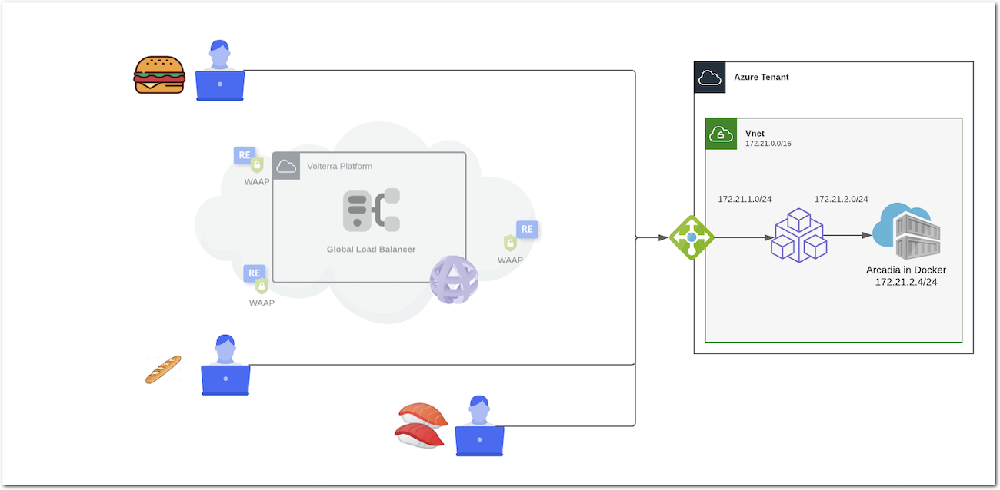

Workshop Volterra 10x > Class1 - F5XC WAAP Use Cases Source |
Module 3 - Use Case 3 - Protect an app running in Public Cloud only¶
In this section, the application is still running in Docker machine in Azure. But you don’t want to transit through F5XC Global Network, many many reasons:
- Compliancy and regulation
- Latency in countries not covered by F5XC pops
- Any other reason
The architecture is as below. It is the same as previous lab, but users/consumers will bypass the F5XC Global Network, and connect directly to the Mesh Node in Azure (via Azure LB)
Module 3 - All sections